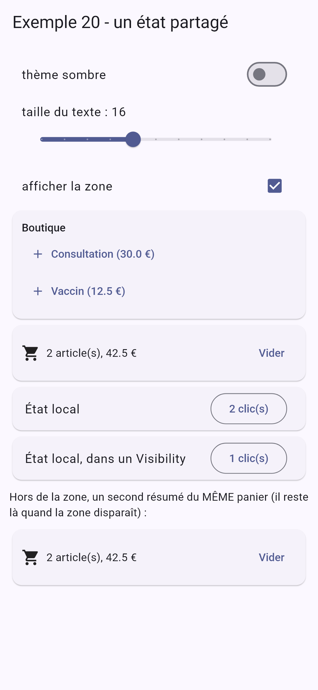
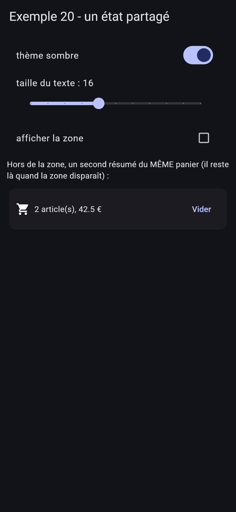
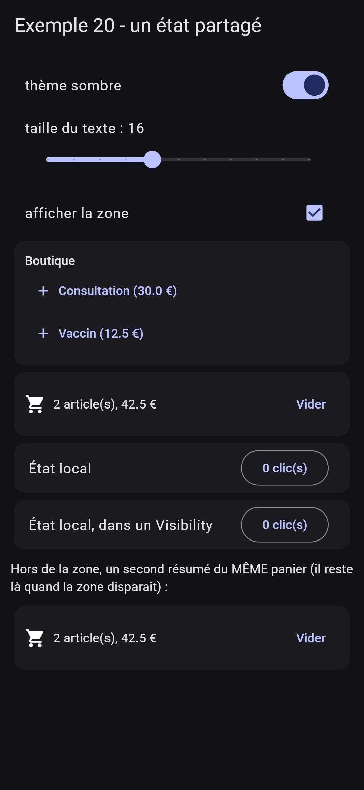

6. L'asynchrone et l'état partagé
6.1. Exemple 19 : Future, Stream et minuteries
Beaucoup de choses arrivent « plus tard » : les tics d'une minuterie, les frappes au clavier, la réponse d'un serveur. [Dart] a deux types pour cela, au cœur du langage :
- [Future<T>] : UNE valeur, plus tard (la réponse d'un serveur, le choix fait dans une fenêtre) ;
- [Stream<T>] : une SUITE de valeurs, au fil du temps (des tics, des messages, les positions GPS...).
[Flutter] a un widget pour afficher chacun, en le reconstruisant quand une valeur arrive : [FutureBuilder] et [StreamBuilder]. Et pour ce qui doit arriver après un délai : [Timer].
| // =========================================================================
// lib/ex19_asynchrone/main.dart - Future, Stream, minuteries
// -------------------------------------------------------------------------
// Beaucoup de choses arrivent "plus tard" : les tics d'une minuterie, les
// frappes au clavier, la réponse d'un serveur. Dart a deux types pour
// cela, au cœur du langage :
// - Future<T> : UNE valeur, plus tard (la réponse d'un serveur) ;
// - Stream<T> : une SUITE de valeurs, au fil du temps (des tics, des
// messages...).
// Flutter a un widget pour afficher chacun, en le reconstruisant quand une
// valeur arrive : FutureBuilder et StreamBuilder.
// Et pour ce qui doit arriver après un délai : Timer (dart:async).
// =========================================================================
import 'dart:async';
import 'dart:math';
import 'package:flutter/material.dart';
const medecins = ['Marie PELISSIER', 'Paul TATOU', 'Sophie DUPONT', 'Jacques DURAND', 'Martine PELLETIER'];
final _hasard = Random();
// un "serveur" simulé : la réponse (un Future) arrive après un délai aléatoire
Future<List<String>> rechercher(String texte) async {
await Future<void>.delayed(Duration(milliseconds: 200 + _hasard.nextInt(600)));
return medecins.where((m) => m.toLowerCase().contains(texte)).toList();
}
// 1. un Stream fabriqué par une fonction "async*" : chaque yield ENVOIE une
// valeur à ceux qui écoutent le Stream
Stream<int> compteARebours(int depart) async* {
for (var reste = depart; reste >= 0; reste--) {
yield reste;
if (reste > 0) await Future<void>.delayed(const Duration(seconds: 1));
}
}
String heureCourante() => DateTime.now().toString().substring(11, 19);
void main() {
runApp(
MaterialApp(
debugShowCheckedModeBanner: false,
theme: ThemeData(colorSchemeSeed: Colors.indigo),
home: const PageAsynchrone(),
),
);
}
class PageAsynchrone extends StatefulWidget {
const PageAsynchrone({super.key});
@override
State<PageAsynchrone> createState() => _PageAsynchroneState();
}
class _PageAsynchroneState extends State<PageAsynchrone> {
final List<String> _journal = [];
// le Stream et le Future sont créés UNE fois (et non à chaque build :
// chaque appel de build relancerait le compte à rebours !)
final Stream<int> _rebours = compteARebours(20);
// 3. un Future qui se termine au bout d'une seconde
final Future<String> _message = Future.delayed(const Duration(seconds: 1), () => 'trois (une seconde plus tard)');
// 2. la recherche au fil de la frappe
Timer? _antiRebond;
int _numeroRequete = 0; // le numéro de la DERNIÈRE recherche lancée
List<String> _resultats = [];
void _tracer(String message) => setState(() => _journal.add('${heureCourante()} $message'));
// appelée à chaque frappe
void _saisie(String texte) {
// l'ANTI-REBOND : chaque frappe annule la minuterie de la frappe
// précédente ; la recherche ne part qu'après 400 ms sans frappe
_antiRebond?.cancel();
_antiRebond = Timer(const Duration(milliseconds: 400), () => _lancer(texte.trim().toLowerCase()));
}
Future<void> _lancer(String texte) async {
// moins de deux lettres : pas de recherche, aucun résultat
if (texte.length < 2) {
_numeroRequete++; // une réponse encore attendue sera ignorée
setState(() => _resultats = []);
return;
}
// "périmée" : une réponse qui arrive APRÈS qu'on a lancé une autre
// recherche doit être ignorée (sinon la réponse lente d'une vieille
// recherche écraserait celle de la nouvelle)
final numero = ++_numeroRequete;
_tracer('recherche envoyée : « $texte »');
final trouves = await rechercher(texte);
if (!mounted) return;
if (numero != _numeroRequete) {
_tracer('réponse ignorée (périmée) : « $texte »');
return;
}
setState(() => _resultats = trouves);
}
@override
void dispose() {
_antiRebond?.cancel();
super.dispose();
}
@override
Widget build(BuildContext context) {
final styleTitre = Theme.of(context).textTheme.titleSmall;
return Scaffold(
appBar: AppBar(title: const Text("Exemple 19 - l'asynchrone")),
body: ListView(
padding: const EdgeInsets.all(16),
children: [
Card(
child: Padding(
padding: const EdgeInsets.all(12),
child: Column(
crossAxisAlignment: CrossAxisAlignment.start,
children: [
Text('Un compte à rebours (un Stream et StreamBuilder)', style: styleTitre),
// StreamBuilder : reconstruit son contenu à chaque valeur du Stream ;
// etat.data : la dernière valeur reçue (null avant la première)
StreamBuilder<int>(
stream: _rebours,
builder: (context, etat) =>
Text(etat.hasData ? '${etat.data}' : '...', style: Theme.of(context).textTheme.displaySmall),
),
],
),
),
),
Card(
child: Padding(
padding: const EdgeInsets.all(12),
child: Column(
crossAxisAlignment: CrossAxisAlignment.start,
children: [
Text('Une recherche au fil de la frappe (anti-rebond, réponses périmées)', style: styleTitre),
TextField(
decoration: const InputDecoration(hintText: 'au moins deux lettres : pel, dur...'),
onChanged: _saisie,
),
for (final r in _resultats) Text('• $r'),
if (_resultats.isEmpty) const Text('aucun résultat', style: TextStyle(color: Colors.grey)),
],
),
),
),
Card(
child: Padding(
padding: const EdgeInsets.all(12),
child: Column(
crossAxisAlignment: CrossAxisAlignment.start,
children: [
Text('Attendre un Future (FutureBuilder)', style: styleTitre),
// tant que le Future n'est pas terminé : le contenu d'attente
FutureBuilder<String>(
future: _message,
builder: (context, etat) => switch (etat.connectionState) {
ConnectionState.done => Text('reçu : ${etat.data}'),
_ => const Text('en attente...', style: TextStyle(color: Colors.grey)),
},
),
],
),
),
),
Text('Journal', style: styleTitre),
for (final (i, ligne) in _journal.indexed) Text('${i + 1}. $ligne', style: const TextStyle(fontSize: 12)),
],
),
);
}
}
|
- lignes 24-26 : un « serveur » simulé : une fonction [async], dont la réponse (un [Future]) arrive après un délai aléatoire. [await Future<void>.delayed(...)] attend ce délai sans bloquer l'application ;
- lignes 31-34 : un [Stream] fabriqué par une fonction [async*] (avec une étoile) : un générateur asynchrone. Chaque [yield] envoie une valeur à ceux qui écoutent le [Stream] ; entre deux valeurs, la fonction attend une seconde ;
- lignes 61-63 : le [Stream] et le [Future] sont créés UNE fois, dans des champs de l'objet [State], et non dans [build] : chaque reconstruction relancerait le compte à rebours ! C'est l'erreur la plus fréquente avec [FutureBuilder] et [StreamBuilder] ;
- lignes 66-68 : l'état de la recherche au fil de la frappe : une minuterie, le numéro de la dernière recherche lancée, et les résultats ;
- lignes 73-77 : l'anti-rebond (« debounce ») : on attend que l'utilisateur fasse une pause avant d'interroger le serveur, au lieu d'envoyer une requête par touche. Chaque frappe annule la minuterie de la frappe précédente ([cancel()]) et en lance une nouvelle : la recherche ne part qu'après 400 millisecondes sans frappe ;
- lignes 80-98 : la recherche. Une réponse « périmée » (qui arrive APRÈS qu'on a lancé une autre recherche) doit être ignorée : sinon, la réponse lente d'une vieille recherche écraserait celle de la nouvelle. Chaque recherche reçoit un numéro ([++_numeroRequete]) ; à l'arrivée de sa réponse, si ce n'est plus le numéro de la dernière recherche, on l'ignore. [if (!mounted) return;] : l'écran a pu disparaître pendant l'attente ;
- lignes 102-104 : la minuterie est arrêtée si l'écran disparaît ;
- lignes 124-127 : [StreamBuilder] écoute le [Stream] et reconstruit son contenu à chaque valeur. [builder] reçoit un instantané ([etat], un [AsyncSnapshot]) : [etat.hasData], [etat.data] (la dernière valeur reçue), [etat.hasError], [etat.connectionState]. Quand le widget disparaît, [StreamBuilder] se désabonne tout seul ;
- lignes 158-162 : [FutureBuilder] attend le [Future] : tant qu'il n'est pas terminé, le contenu d'attente ; ensuite, sa valeur. Le [switch] sur [etat.connectionState] choisit l'un ou l'autre.
On tape « p », « pe », « pel » rapidement : une seule recherche part. Puis « du », suivi de « dup » avant la réponse : la réponse de « du » arrive trop tard, et elle est ignorée si « dup » a déjà reçu la sienne :
En [JavaScript], la même chose s'écrit avec des promesses et des minuteries ; [Angular] y ajoute les « observables » de [RxJS]. En [Dart], [Future] et [Stream] sont dans la bibliothèque de base, et [async], [await], [async*], [yield], [await for] dans le langage : c'est pourquoi [Flutter] n'a pas besoin de bibliothèque pour l'asynchrone.
6.2. Exemple 20 : un état partagé
Même question que dans les cours précédents : quelles « portées » pour les données d'une application ?
- l'état local d'un widget disparaît avec lui ;
- l'état d'un magasin (« store ») est partagé par tous les widgets et survit à leur retrait... mais pas à l'arrêt de l'application ;
- l'état rangé sur l'appareil survit à l'arrêt de l'application.
6.2.1. Le panier
| // =========================================================================
// lib/ex20_etat_partage/magasins/panier.dart - un ÉTAT PARTAGÉ, avec provider
// -------------------------------------------------------------------------
// Un "magasin" (store) est un état qui vit HORS des écrans, en UN seul
// exemplaire, partagé par tous ceux qui le lisent. L'exemple 14 l'a fait
// à la main (InheritedNotifier) ; le paquet provider, le plus utilisé
// avec Flutter (et recommandé par sa documentation), fait la même chose
// en une ligne :
//
// ChangeNotifierProvider(create: (_) => Panier(), child: ...)
//
// Le magasin est un ChangeNotifier ordinaire. Organisation habituelle :
// - l'ÉTAT : des données PRIVÉES (_articles) ;
// - les ACTIONS : des méthodes, seules à modifier l'état, qui finissent
// par notifyListeners() ;
// - les valeurs calculées : des getters.
// Un widget y accède par son context :
// - context.watch<Panier>() : lire ET s'abonner (reconstruit à chaque changement) ;
// - context.read<Panier>() : lire sans s'abonner (pour appeler une action) ;
// - context.select<Panier, int>((p) => p.nombre) : s'abonner à UNE valeur :
// reconstruit seulement si CETTE valeur change.
// Le magasin vit tant que son fournisseur vit : il survit au retrait d'un
// écran... mais pas à l'arrêt de l'application.
// =========================================================================
import 'package:flutter/foundation.dart';
typedef Article = ({String libelle, double prix});
class Panier extends ChangeNotifier {
final List<Article> _articles = [];
// une vue NON MODIFIABLE de la liste : seules les actions la changent
List<Article> get articles => List.unmodifiable(_articles);
int get nombre => _articles.length;
double get total => _articles.fold(0, (s, a) => s + a.prix);
void ajouter(Article article) {
_articles.add(article);
notifyListeners();
}
void vider() {
_articles.clear();
notifyListeners();
}
}
|
Un magasin est un état qui vit HORS des écrans, en UN seul exemplaire, partagé par tous ceux qui le lisent. L'exemple 14 l'a fait à la main ([InheritedNotifier]). Le paquet [provider], le plus utilisé avec [Flutter] (et celui que recommande sa documentation), fait la même chose en une ligne : [ChangeNotifierProvider(create: (_) => Panier(), child: ...)].
- ligne 31 : l'état : des données privées ;
- lignes 34-36 : des valeurs calculées : des getters. [List.unmodifiable] : une vue non modifiable de la liste ; seules les actions la changent ;
- lignes 38-45 : les actions : des méthodes, seules à modifier l'état, qui finissent par [notifyListeners()].
6.2.2. Les préférences
| // =========================================================================
// lib/ex20_etat_partage/magasins/preferences.dart - un état qui survit à l'arrêt
// -------------------------------------------------------------------------
// Pour qu'une donnée survive à l'arrêt de l'application, il faut la ranger
// SUR L'APPAREIL. Le paquet shared_preferences offre un petit dictionnaire
// clé -> valeur (bool, int, double, String), propre à l'application et
// conservé sur l'appareil (sur le web : dans le localStorage du navigateur).
// - au démarrage, on lit les valeurs mémorisées (main.dart) ;
// - à chaque changement, on les réécrit.
// On n'y range JAMAIS de donnée sensible (mot de passe, jeton) : elles y
// sont écrites en clair.
// =========================================================================
import 'package:flutter/foundation.dart';
import 'package:shared_preferences/shared_preferences.dart';
class Preferences extends ChangeNotifier {
static const _cleSombre = 'exemple20.sombre';
static const _cleTaille = 'exemple20.taille';
final SharedPreferences _stockage;
bool _sombre;
double _taille; // taille du texte
// l'état de départ : ce que l'appareil a mémorisé, sinon les valeurs par défaut
Preferences(this._stockage)
: _sombre = _stockage.getBool(_cleSombre) ?? false,
_taille = _stockage.getDouble(_cleTaille) ?? 16;
bool get sombre => _sombre;
double get taille => _taille;
// un paramètre nommé facultatif par préférence : on ne change que ce qui est fourni
void modifier({bool? sombre, double? taille}) {
if (sombre != null) {
_sombre = sombre;
_stockage.setBool(_cleSombre, sombre); // écriture sur l'appareil
}
if (taille != null) {
_taille = taille;
_stockage.setDouble(_cleTaille, taille);
}
notifyListeners();
}
}
|
Pour qu'une donnée survive à l'arrêt de l'application, il faut la ranger sur l'appareil. Le paquet [shared_preferences] offre un petit dictionnaire clé -> valeur ([bool], [int], [double], [String]), propre à l'application et conservé sur l'appareil (sur le web : dans le [localStorage] du navigateur).
- ligne 21 : le stockage, reçu à la création ;
- lignes 26-28 : l'état de départ : ce que l'appareil a mémorisé, sinon les valeurs par défaut. Les champs sont initialisés par la « liste d'initialisation » du constructeur (après les deux-points), avant le corps ;
- lignes 34-43 : une seule action, à paramètres nommés facultatifs : on ne change que ce qui est fourni, et on l'écrit aussitôt sur l'appareil ([setBool], [setDouble]).
On n'y range JAMAIS de donnée sensible (mot de passe, jeton) : elles y sont écrites en clair. Pour cela, il existe le paquet [flutter_secure_storage], qui utilise le coffre-fort du système ([Keystore] d'[Android], [Keychain] d'[iOS]).
| // lib/ex20_etat_partage/composants/boutique.dart - AJOUTE au panier partagé
import 'package:flutter/material.dart';
import 'package:provider/provider.dart';
import '../magasins/panier.dart';
const produits = <Article>[(libelle: 'Consultation', prix: 30), (libelle: 'Vaccin', prix: 12.5)];
class Boutique extends StatelessWidget {
const Boutique({super.key});
@override
Widget build(BuildContext context) {
// read : on ne fait qu'APPELER une action ; Boutique n'est pas
// reconstruite quand le panier change
final panier = context.read<Panier>();
return Card(
child: Padding(
padding: const EdgeInsets.all(12),
child: Column(
crossAxisAlignment: CrossAxisAlignment.start,
children: [
Text('Boutique', style: Theme.of(context).textTheme.titleSmall),
for (final p in produits)
TextButton.icon(
icon: const Icon(Icons.add),
label: Text('${p.libelle} (${p.prix} €)'),
onPressed: () => panier.ajouter(p),
),
],
),
),
);
}
}
|
- ligne 16 : [context.read<Panier>()] lit le panier fourni plus haut, SANS s'abonner : la boutique ne fait qu'appeler une action, elle n'a pas à être reconstruite quand le panier change.
| // lib/ex20_etat_partage/composants/resume_panier.dart - LIT le même panier
import 'package:flutter/material.dart';
import 'package:provider/provider.dart';
import '../magasins/panier.dart';
class ResumePanier extends StatelessWidget {
const ResumePanier({super.key});
@override
Widget build(BuildContext context) {
// select : reconstruit SEULEMENT si le nombre ou le total change
final nombre = context.select<Panier, int>((p) => p.nombre);
final total = context.select<Panier, double>((p) => p.total);
return Card(
child: Padding(
padding: const EdgeInsets.all(12),
child: Row(
children: [
const Icon(Icons.shopping_cart),
const SizedBox(width: 8),
Expanded(child: Text('$nombre article(s), $total €')),
TextButton(
onPressed: nombre == 0 ? null : () => context.read<Panier>().vider(),
child: const Text('Vider'),
),
],
),
),
);
}
}
|
- lignes 13-14 : [context.select] lit UNE valeur du panier, et abonne le widget à CETTE valeur : il n'est reconstruit que si elle change. [context.watch<Panier>()] lirait et s'abonnerait à tout le panier.
| // lib/ex20_etat_partage/composants/compteur_local.dart - un état LOCAL, qui disparaît avec le widget
import 'package:flutter/material.dart';
class CompteurLocal extends StatefulWidget {
final String titre;
const CompteurLocal({super.key, required this.titre});
@override
State<CompteurLocal> createState() => _CompteurLocalState();
}
class _CompteurLocalState extends State<CompteurLocal> {
int _clics = 0;
@override
Widget build(BuildContext context) {
return Card(
child: ListTile(
title: Text(widget.titre),
trailing: OutlinedButton(onPressed: () => setState(() => _clics++), child: Text('$_clics clic(s)')),
),
);
}
}
|
Un état local, qui disparaît avec le widget.
6.2.4. L'application
| // =========================================================================
// lib/ex20_etat_partage/main.dart - trois "portées" de données
// -------------------------------------------------------------------------
// - l'état LOCAL d'un widget (CompteurLocal) disparaît avec lui ;
// - l'état d'un MAGASIN (le panier) est partagé par tous les widgets
// et survit à leur retrait - mais pas à l'arrêt de l'application ;
// - l'état rangé sur l'appareil (les préférences) survit à l'arrêt.
// Et Visibility(maintainState: true) : le contenu est CACHÉ, mais pas
// retiré ; son état local est conservé.
// Décochez puis recochez "afficher la zone", puis arrêtez et relancez
// l'application : comparez.
// =========================================================================
import 'package:flutter/material.dart';
import 'package:provider/provider.dart';
import 'package:shared_preferences/shared_preferences.dart';
import 'composants/boutique.dart';
import 'composants/compteur_local.dart';
import 'composants/resume_panier.dart';
import 'magasins/panier.dart';
import 'magasins/preferences.dart';
Future<void> main() async {
// indispensable avant d'utiliser un "plugin" (du code propre à Android, iOS,
// web...) comme shared_preferences, AVANT runApp
WidgetsFlutterBinding.ensureInitialized();
final stockage = await SharedPreferences.getInstance();
runApp(
// MultiProvider : plusieurs fournisseurs, les uns dans les autres,
// au-dessus de toute l'application
MultiProvider(
providers: [
ChangeNotifierProvider(create: (_) => Panier()),
ChangeNotifierProvider(create: (_) => Preferences(stockage)),
],
child: const Application(),
),
);
}
class Application extends StatelessWidget {
const Application({super.key});
@override
Widget build(BuildContext context) {
// watch : l'application est reconstruite quand les préférences changent
final preferences = context.watch<Preferences>();
return MaterialApp(
debugShowCheckedModeBanner: false,
theme: ThemeData(colorSchemeSeed: Colors.indigo),
// le thème sombre, et le choix entre les deux
darkTheme: ThemeData(colorSchemeSeed: Colors.indigo, brightness: Brightness.dark),
themeMode: preferences.sombre ? ThemeMode.dark : ThemeMode.light,
// builder : enveloppe TOUS les écrans ; ici, la taille du texte
builder: (context, child) => MediaQuery(
data: MediaQuery.of(context).copyWith(textScaler: TextScaler.linear(preferences.taille / 16)),
child: child!,
),
home: const PageEtatPartage(),
);
}
}
class PageEtatPartage extends StatefulWidget {
const PageEtatPartage({super.key});
@override
State<PageEtatPartage> createState() => _PageEtatPartageState();
}
class _PageEtatPartageState extends State<PageEtatPartage> {
bool _zoneVisible = true;
@override
Widget build(BuildContext context) {
final preferences = context.watch<Preferences>();
return Scaffold(
appBar: AppBar(title: const Text('Exemple 20 - un état partagé')),
body: ListView(
padding: const EdgeInsets.all(12),
children: [
SwitchListTile(
title: const Text('thème sombre'),
value: preferences.sombre,
onChanged: (v) => preferences.modifier(sombre: v),
),
ListTile(
title: Text('taille du texte : ${preferences.taille.round()}'),
subtitle: Slider(
value: preferences.taille,
min: 12,
max: 22,
divisions: 10,
onChanged: (v) => preferences.modifier(taille: v),
),
),
CheckboxListTile(
title: const Text('afficher la zone'),
value: _zoneVisible,
onChanged: (v) => setState(() => _zoneVisible = v!),
),
// retirée : ces widgets disparaissent, avec leur état local
if (_zoneVisible) ...[const Boutique(), const ResumePanier(), const CompteurLocal(titre: 'État local')],
// cachée : le widget reste en mémoire, son état est conservé
Visibility(
visible: _zoneVisible,
maintainState: true,
child: const CompteurLocal(titre: 'État local, dans un Visibility'),
),
const Padding(
padding: EdgeInsets.symmetric(vertical: 8),
child: Text('Hors de la zone, un second résumé du MÊME panier (il reste là quand la zone disparaît) :'),
),
const ResumePanier(),
],
),
);
}
}
|
- lignes 27-28 : [shared_preferences] est un « plugin » : il utilise du code propre à chaque plateforme ([Android], web...). Pour s'en servir AVANT [runApp], il faut d'abord initialiser [Flutter] ([ensureInitialized]). La lecture du stockage est asynchrone : [main] attend qu'elle soit faite ;
- lignes 32-35 : [MultiProvider] place plusieurs fournisseurs, les uns dans les autres, au-dessus de toute l'application. [ChangeNotifierProvider] crée le [ChangeNotifier] ([create]), le fournit à ses descendants, reconstruit ceux qui s'y abonnent quand il change, et le libère quand il disparaît ;
- ligne 48 : l'application lit les préférences et s'y abonne : elle est reconstruite quand elles changent ;
- lignes 53-54 : deux thèmes, clair et sombre, et le choix entre les deux ([themeMode]) ;
- lignes 56-58 : le [builder] de [MaterialApp] enveloppe TOUS les écrans. On y change la taille du texte de toute l'application : [MediaQuery] décrit l'écran et les réglages de l'utilisateur (dont [textScaler], le facteur d'agrandissement du texte, qu'on règle aussi dans les paramètres d'accessibilité du téléphone) ;
- lignes ligne 104 : retirée, la zone disparaît, avec l'état local de ses widgets ;
- lignes 106-109 : [Visibility] avec [maintainState: true] CACHE son enfant sans le retirer : son état est conservé. (C'est ce que fait [<Activity mode="hidden">] dans le cours [React].)
On ajoute deux articles, on appuie une fois sur chaque compteur local (à gauche) ; on retire la zone et on passe au thème sombre (au milieu) ; on remet la zone (à droite) :
 |  |  |
Le panier a survécu au retrait de la zone (le second résumé le montre) ; le compteur retiré est reparti de zéro ; le compteur caché a gardé sa valeur. Arrêtez l'application et relancez-la : le thème sombre et la taille du texte sont conservés, le panier est vide.
Pourquoi [provider] ? Il existe beaucoup de bibliothèques de gestion d'état pour [Flutter] ([Riverpod], [Bloc], [GetX], [MobX]...). [provider] est la plus simple : ce n'est qu'une façon commode d'écrire les [InheritedWidget] de l'exemple 14, autour des [ChangeNotifier] de [Flutter]. C'est celle qu'utilise le guide d'architecture de la documentation de [Flutter], et celle qu'utilisera l'étude de cas.